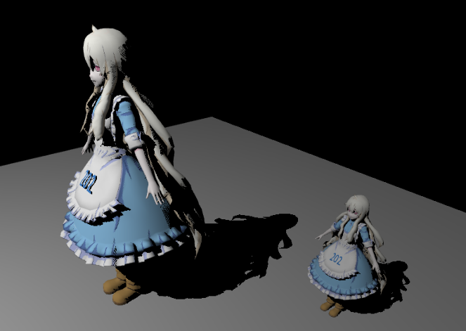
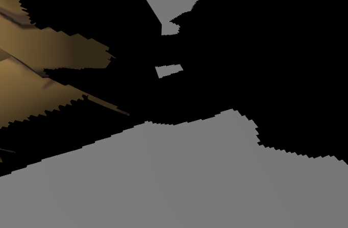
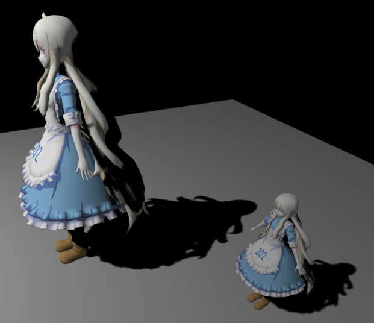
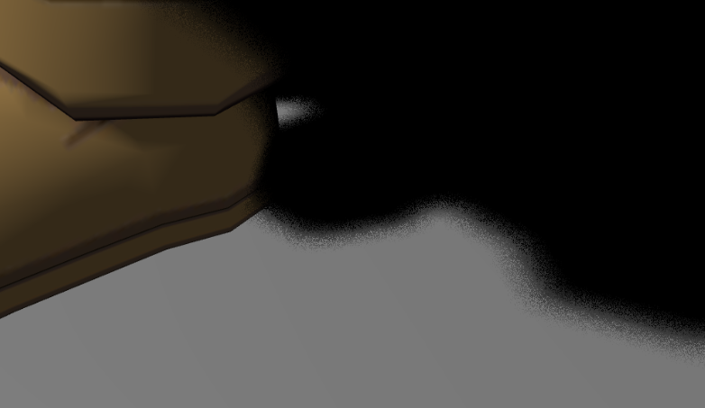
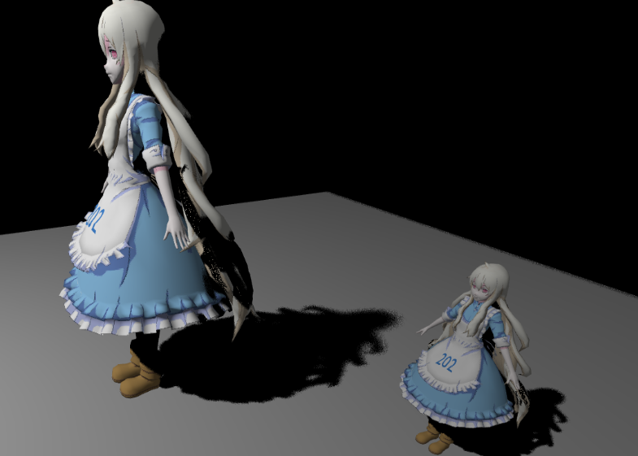

Games202作业1笔记
作业要求：对于硬阴影要求实现经典的 Two Pass Shadow Map 方法，对于软阴影则 要求实现 PCF(Percentage Closer Filter) 和 PCSS(Percentage Closer Soft Shadow)
初始的代码框架是没有阴影的 Blinn-Phong 场景。
Two Pass Shadow Map
硬阴影的算法流程比较简单，进行两次渲染：
第一次将相机设置在光源，记录场景的深度保存在texture中，代码框架中使用
pack函数来节省存储空间，因此需要调用unpack获取实际的深度。在第二轮渲染中，使用phongShader进行渲染。
由于这一步需要查询深度texture，因此要将物体坐标转换到之前保存的深度texture上的坐标，需要修改
CalcLightMVP(translate, scale)函数，得到一个变换矩阵MVP，然后传入phongVertex.glsl中，将变换后的结果保存在vPositionFromLight中，传递给phongFragment.glsl1
2
3
4
5
6
7
8
9
10
11
12
13
14
15
16
17
18
19
20CalcLightMVP(translate, scale) {
let lightMVP = mat4.create();
let modelMatrix = mat4.create();
let viewMatrix = mat4.create();
let projectionMatrix = mat4.create();
// Model transform
mat4.translate(modelMatrix,modelMatrix,translate);
mat4.scale(modelMatrix,modelMatrix,scale);
// View transform
mat4.lookAt(viewMatrix,this.lightPos,this.focalPoint,this.lightUp);
// Projection transform
mat4.ortho(projectionMatrix,-100,100,-100,100,1e-2,400);
mat4.multiply(lightMVP, projectionMatrix, viewMatrix);
mat4.multiply(lightMVP, lightMVP, modelMatrix);
return lightMVP;
}在phongFragment.glsl 中，将
vPositionFromLight缩放到[0,1]上，作为纹理查询的坐标。接下来修改
useShadowMap(sampler2D shadowMap, vec4 shadowCoord)函数，实现以下步骤：查询深度texture，并通过unpack函数得到对应深度
和当前深度进行判断，返回0或1
1
2
3
4
5
6float useShadowMap(sampler2D shadowMap, vec4 shadowCoord){
vec4 depthvec = texture2D(shadowMap,shadowCoord.xy);
float depth = unpack(depthvec);
float res = depth > shadowCoord.z ? 1.0: 0.0;
return res;
}
结果如下


可以看到阴影边缘会产生锯齿状
PCF
PCF主要是通过滤波计算处于阴影中点的数量。
只需要修改
PCF(sampler2D shadowMap, vec4 coords)函数。算法：对于每个要着色的像素点，在其周围采样NUM_SAMPLES次，记录处于不阴影中的点的个数，返回所占的比例。
1
2
3
4
5
6
7
8
9
10
11
12
13
14
15
16
17
18float PCF(sampler2D shadowMap, vec4 coords) {
poissonDiskSamples(coords.xy);
float samplewidth = 1.0/500.0;
int count = 0;
for(int i = 0; i < NUM_SAMPLES; i++){
vec2 p = poissonDisk[i] * samplewidth + coords.xy;
vec4 depthvec = texture2D(shadowMap,p);
float depth = unpack(depthvec);
if(depth > coords.z - 0.01){
count += 1;
}
}
float res = float(count) / float(NUM_SAMPLES);
return res;
}为了减少自遮挡产生一些噪点，在判断深度时需要添加一个偏置值0.01
结果如下


可以看到锯齿状已经明显消除
PCSS
PCSS在PCF的基础上进一步改进，使得滤波块的大小能够自适应。
在PCF之前执行block查询，得到区域（块匹配内部定义的区域，不是滤波块对应的区域）内遮挡物的平均深度
根据遮挡物深度，光源大小等参数，利用相似三角形得到
wPenumbra，
根据
wPenumbra计算滤波块的大小，然后进行PCF1
2
3
4
5
6
7
8
9
10
11
12
13
14
15
16
17
18
19
20
21
22
23
24
25
26
27
28
29
30
31
32
33
34
35
36
37
38
39
40
41
42
43
44
45
46
47
48
49
50
51
52
53
54
55float PCSS(sampler2D shadowMap, vec4 coords){
// STEP 1: avgblocker depth
float depthavg = findBlocker(shadowMap,coords.xy,coords.z);
if(depthavg < EPS) return 1.0;
if(depthavg > 1.0) return 0.0; // can not swap
// STEP 2: penumbra size
float wPenumbra = (coords.z - depthavg) * W_LIGHT / depthavg;
float textureSize = 400.0;
float filterStride = 5.0;
float filterRange = 1.0 / textureSize * filterStride * wPenumbra;
// STEP 3: filtering
int count = 0;
for(int i = 0; i < NUM_SAMPLES; i++){
vec2 p = poissonDisk[i] * filterRange + coords.xy;
vec4 depthvec = texture2D(shadowMap,p);
float depth = unpack(depthvec);
if(depth + 0.01 > coords.z){
count += 1;
}
}
float res = float(count) / float(NUM_SAMPLES);
return res;
}
float findBlocker( sampler2D shadowMap, vec2 uv, float zReceiver ) {
poissonDiskSamples(uv);
float depthavg = 0.0;
int count = 0;
float textureSize = 400.0;
float filterStride = 20.0;
float filterRange = 1.0 / textureSize * filterStride;
for(int i = 0; i < NUM_SAMPLES; i++){
vec2 p = poissonDisk[i] * filterRange + uv;
vec4 depthvec = texture2D(shadowMap,p);
float depth = unpack(depthvec);
if(zReceiver > depth + 0.01){
count += 1;
depthavg += depth;
}
}
return depthavg / float(count);
}结果如下

阴影的范围随着定义的光源大小而变化。
Games202作业1笔记